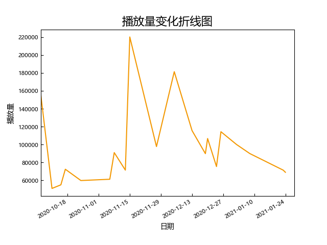

HII4.0(20201006-)（现H）

场次：
20（普通场：13）
平均播放量：
97455（所有公演），79182（普通公演）
中位播放量：
89912（所有公演），72445（普通公演）
标准差：
42558（所有公演），17320（普通公演）
播放量前三：
- 20年王奕生诞(220153)
- H队六周年(181386)
- 20年袁一琦生诞及新H首演(155024)
播放量变化分析：
银河战舰-再加速！选秀、cp带来的红利，北皇小高等整活成员的加入，让HII的播放量较3.0时期进一步上升
高播放量公演推荐：
- 20年王奕生诞：青涩校园xql（河从不可说系列之后少有的出圈cp，微博里一堆韩粉秀粉都在转发念信场面）
- 201220头号新闻：国王游戏各种好笑场面（19年以后的H真的很适合各种游戏mc）
- 210102头号新闻：游戏王者李佳恩，人菜瘾大李佳恩
- 20年程戈生诞：很有情怀的一场公演，不论是赵老师的放手、北芭的助演团，还是从北芭到H的那个节目，都很有仪式感